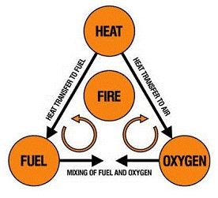

Fire safety is the set of practices intended to reduce the destruction caused by fire. Fire safety measures include those that are intended to prevent ignition of an uncontrolled fire, and those that are used to limit the development and effects of a fire after it starts. Fire safety measures include those that are intended to prevent ignition of an uncontrolled fire, and those that are used to limit the development and effects of a fire after it starts.
A fire extinguisher is an active fire protection device used to extinguish or control small fires, often in emergency situations. It is not intended for use on an out-of-control fire, such as one which has reached the ceiling, endangers the user (i.e., no escape route, smoke, explosion hazard, etc.), or otherwise requires the expertise of a fire brigade.
Fire extinguishers work by removing one of the three elements necessary for fire to occur: fuel, heat, or oxygen. The most common type of fire extinguisher uses a chemical agent to remove the fuel from the fire triangle. The agent is typically a dry chemical, which smothers the fire by chemically reacting with the combustible materials to produce a non-combustible compound, depriving the fire of fuel.
There are five main types of fire extinguishers: Water, Foam, Dry Chemical(ABC powder), Carbon Dioxide, and Wet Chemical. Each type of extinguisher is designed to fight a specific type of fire. Water extinguishers are designed to fight Class A fires. Foam extinguishers are designed to fight Class A, B fires. Dry Chemical extinguishers are designed to fight Class A, B, C and Electrical fires. Carbon Dioxide extinguishers are designed to fight Class B, and Electrical fires. Dry Chemical extinguishers are designed to fight Class A, and Cooking oils fires.

Source: Safety and Health Magazine
Fire extinguishers are designed to be used by anyone. However, it is important to know how to use a fire extinguisher before a fire occurs. The first step is to identify the type of fire you are dealing with. The second step is to know which is the appropriate fire extinguisher to extinguish the fire. The third step is to know how to activate and use the fire extinguisher properly.

Source: Flame Safety
Depending on its intended application, a fire extinguisher may be infused with a variety of chemicals.
Fire extinguishers are a piece of equipment that may save lives, they should be checked by a professional on a regular basis and maintained once a year.

Source: International Association of Certified Home Inspectors
The three safest ways to get rid of a fire extinguisher are to recycle it when it's empty, give it to the fire department, or take it to a specific disposal site. If the extinguisher's canister is empty, recycle it.
The first fire extinguisher was invented by the British inventor Captain George William Manby in 1819, it was a vessel containing 3 gallons of pearl ash solution under compressed air pressure. Before fire extinguishers, Roman's in 16th century were using sand-bucket as a method to extinguish fire.
Source: Made Up In Britain
Source: Britannica
Fire extinguishers are made from a variety of materials. The most common materials used are steel, aluminum, and copper.

Source: Fire and Electrical UK
{kind=link}